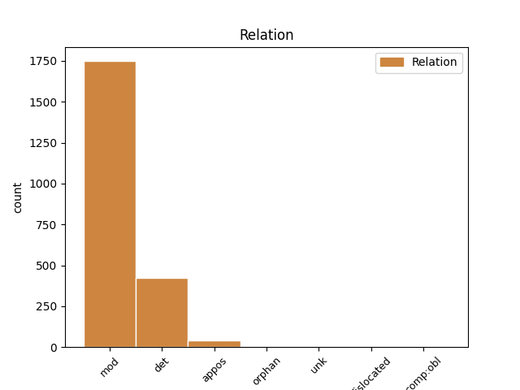
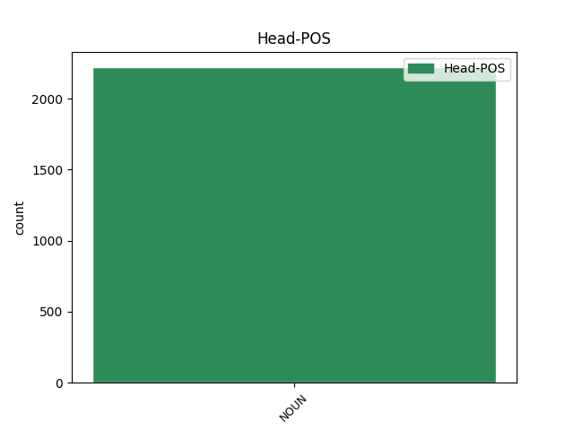
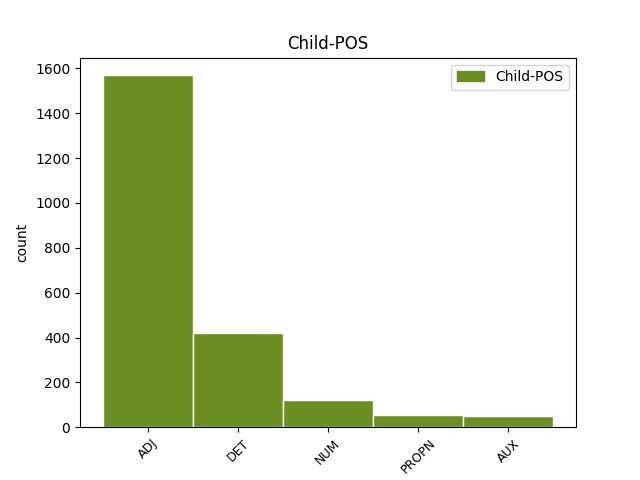

Distribution of features within this leaf



Agreement Rules sorted by frequency.
- When the dependent token is the modifer(mod) of the head token, and the head token is NOUN and the dependent token is ADJ.
1 си _ _ _ _ 0 _ _ _
2 же _ _ _ _ 0 _ _ _
3 писана _ _ _ _ 0 _ _ _
4 бꙑшѧ _ _ _ _ 0 _ _ _
5 да _ _ _ _ 0 _ _ _
6 вѣрѫ _ _ _ _ 0 _ _ _
7 имете _ _ _ _ 0 _ _ _
8 ѣко _ _ _ _ 0 _ _ _
9 и҃с _ _ _ _ 0 _ _ _
10 естъ _ _ _ _ 0 _ _ _
11 х҃ъ _ _ _ _ 0 _ _ _
12 с҃нъ _ _ _ _ 0 _ _ _
13 б҃жіи _ _ _ _ 0 _ _ _
14 ꙇ _ _ _ _ 0 _ _ _
15 да _ _ _ _ 0 _ _ _
16 вѣрѫѭште _ _ _ _ 0 _ _ _
17 живота животъ NOUN Nb Case=Gen|Gender=Masc|Number=Sing 0 _ _ _
18 вѣчънааго вѣчьнъ ADJ A- Case=Gen|Degree=Pos|Gender=Masc,Neut|Number=Sing|Strength=Weak 17 mod _ ref=JOHN_20.31
19 имате _ _ _ _ 0 _ _ _
20 въ _ _ _ _ 0 _ _ _
21 імѧ _ _ _ _ 0 _ _ _
22 его _ _ _ _ 0 _ _ _
1 мънога _ _ _ _ 0 _ _ _
2 же _ _ _ _ 0 _ _ _
3 ина _ _ _ _ 0 _ _ _
4 знамениѣ _ _ _ _ 0 _ _ _
5 сътвори _ _ _ _ 0 _ _ _
6 и҃с _ _ _ _ 0 _ _ _
7 прѣдъ _ _ _ _ 0 _ _ _
8 оученикꙑ _ _ _ _ 0 _ _ _
9 своими _ _ _ _ 0 _ _ _
10 ѣже _ _ _ _ 0 _ _ _
11 не _ _ _ _ 0 _ _ _
12 сѫтъ _ _ _ _ 0 _ _ _
13 писана _ _ _ _ 0 _ _ _
14 въ _ _ _ _ 0 _ _ _
15 кънигахъ кънигꙑ NOUN Nb Case=Loc|Gender=Fem|Number=Plur 0 _ _ _
16 сихъ сь DET Pd Case=Loc|Number=Plur 15 det _ ref=JOHN_20.30
1 ꙇ _ _ _ _ 0 _ _ _
2 видѣ _ _ _ _ 0 _ _ _
3 дъва дъва NUM Ma Case=Acc|Gender=Masc|Number=Dual 4 mod _ ref=JOHN_20.12
4 анⷸ҇ла ангелъ NOUN Nb Case=Acc|Gender=Masc|Number=Dual 0 _ _ _
5 въ _ _ _ _ 0 _ _ _
6 бѣлахъ _ _ _ _ 0 _ _ _
7 сѣдѧшта _ _ _ _ 0 _ _ _
8 единого _ _ _ _ 0 _ _ _
9 оу _ _ _ _ 0 _ _ _
10 главꙑ _ _ _ _ 0 _ _ _
11 ꙇ _ _ _ _ 0 _ _ _
12 единого _ _ _ _ 0 _ _ _
13 оу _ _ _ _ 0 _ _ _
14 ногоу _ _ _ _ 0 _ _ _
15 ꙇдеже _ _ _ _ 0 _ _ _
16 бѣ _ _ _ _ 0 _ _ _
17 лежало _ _ _ _ 0 _ _ _
18 тѣло _ _ _ _ 0 _ _ _
19 и҃сво _ _ _ _ 0 _ _ _
1 мънога _ _ _ _ 0 _ _ _
2 же _ _ _ _ 0 _ _ _
3 ина _ _ _ _ 0 _ _ _
4 знамениѣ знамениѥ NOUN Nb Case=Acc|Gender=Neut|Number=Plur 0 _ _ _
5 сътвори _ _ _ _ 0 _ _ _
6 и҃с _ _ _ _ 0 _ _ _
7 прѣдъ _ _ _ _ 0 _ _ _
8 оученикꙑ _ _ _ _ 0 _ _ _
9 своими _ _ _ _ 0 _ _ _
10 ѣже _ _ _ _ 0 _ _ _
11 не _ _ _ _ 0 _ _ _
12 сѫтъ бꙑти AUX V- Mood=Ind|Number=Plur|Person=3|Tense=Pres|VerbForm=Fin|Voice=Act 4 mod _ ref=JOHN_20.30
13 писана _ _ _ _ 0 _ _ _
14 въ _ _ _ _ 0 _ _ _
15 кънигахъ _ _ _ _ 0 _ _ _
16 сихъ _ _ _ _ 0 _ _ _
1 г҃ла _ _ _ _ 0 _ _ _
2 емоу _ _ _ _ 0 _ _ _
3 единъ _ _ _ _ 0 _ _ _
4 отъ _ _ _ _ 0 _ _ _
5 оученикъ _ _ _ _ 0 _ _ _
6 его _ _ _ _ 0 _ _ _
7 аньдрѣа _ _ _ _ 0 _ _ _
8 братръ братръ NOUN Nb Case=Nom|Gender=Masc|Number=Sing 0 _ _ _
9 симона симонъ PROPN Ne Case=Gen|Gender=Masc|Number=Sing 8 mod _ ref=JOHN_6.8
10 петра _ _ _ _ 0 _ _ _
1 еда _ _ _ _ 0 _ _ _
2 тꙑ _ _ _ _ 0 _ _ _
3 болеи _ _ _ _ 0 _ _ _
4 еси _ _ _ _ 0 _ _ _
5 о҃тца отьць NOUN Nb Case=Gen|Gender=Masc|Number=Sing 0 _ _ _
6 нашего _ _ _ _ 0 _ _ _
7 авраама авраамъ PROPN Ne Case=Gen|Gender=Masc|Number=Sing 5 appos _ ref=JOHN_8.53
8 ꙇже _ _ _ _ 0 _ _ _
9 оумьрѣтъ _ _ _ _ 0 _ _ _
1 ꙇ _ _ _ _ 0 _ _ _
2 слꙑшашѧ _ _ _ _ 0 _ _ _
3 се _ _ _ _ 0 _ _ _
4 отъ _ _ _ _ 0 _ _ _
5 фарисѣи фарисеи NOUN Nb Case=Gen|Gender=Masc|Number=Plur 0 _ _ _
6 сѫщеи бꙑти AUX V- Case=Nom|Gender=Masc|Number=Plur|Strength=Weak|Tense=Pres|VerbForm=Part|Voice=Act 5 appos _ ref=JOHN_9.40
7 съ _ _ _ _ 0 _ _ _
8 нимъ _ _ _ _ 0 _ _ _
9 ꙇ _ _ _ _ 0 _ _ _
10 рѣшѧ _ _ _ _ 0 _ _ _
11 емоу _ _ _ _ 0 _ _ _
1 ѣкоже _ _ _ _ 0 _ _ _
2 ч҃лвкъ _ _ _ _ 0 _ _ _
3 оходѧ _ _ _ _ 0 _ _ _
4 остави _ _ _ _ 0 _ _ _
5 домъ _ _ _ _ 0 _ _ _
6 свои _ _ _ _ 0 _ _ _
7 ꙇ _ _ _ _ 0 _ _ _
8 давъ _ _ _ _ 0 _ _ _
9 рабомъ _ _ _ _ 0 _ _ _
10 своимъ _ _ _ _ 0 _ _ _
11 властъ _ _ _ _ 0 _ _ _
12 и _ _ _ _ 0 _ _ _
13 комоужъдо къжьдо ADJ Px Case=Dat|Gender=Masc|Number=Sing 14 orphan _ ref=MARK_13.34
14 дѣло дѣло NOUN Nb Case=Acc|Gender=Neut|Number=Sing 0 _ _ _
15 свое _ _ _ _ 0 _ _ _
16 ꙇ _ _ _ _ 0 _ _ _
17 вратьникоу _ _ _ _ 0 _ _ _
18 повелѣ _ _ _ _ 0 _ _ _
19 да _ _ _ _ 0 _ _ _
20 бьдитъ _ _ _ _ 0 _ _ _
21 бьдите _ _ _ _ 0 _ _ _
22 оубо _ _ _ _ 0 _ _ _
1 по _ _ _ _ 0 _ _ _
2 мьнѣ _ _ _ _ 0 _ _ _
3 грѧдетъ _ _ _ _ 0 _ _ _
4 мѫжъ мѫжь NOUN Nb Case=Nom|Gender=Masc|Number=Sing 0 _ _ _
5 ꙇже _ _ _ _ 0 _ _ _
6 прѣдъ _ _ _ _ 0 _ _ _
7 мъноѭ _ _ _ _ 0 _ _ _
8 бꙑⷭ҇ бꙑти AUX V- Aspect=Perf|Mood=Ind|Number=Sing|Person=3|Tense=Past|VerbForm=Fin|Voice=Act 4 det _ ref=JOHN_1.30
9 ѣко _ _ _ _ 0 _ _ _
10 пръвѣи _ _ _ _ 0 _ _ _
11 мене _ _ _ _ 0 _ _ _
12 бѣ _ _ _ _ 0 _ _ _
1 ни _ _ _ _ 0 _ _ _
2 ли _ _ _ _ 0 _ _ _
3 сего _ _ _ _ 0 _ _ _
4 есте _ _ _ _ 0 _ _ _
5 чъли _ _ _ _ 0 _ _ _
6 еже _ _ _ _ 0 _ _ _
7 сътвори _ _ _ _ 0 _ _ _
8 д҃вдъ _ _ _ _ 0 _ _ _
9 егда _ _ _ _ 0 _ _ _
10 възалка _ _ _ _ 0 _ _ _
11 сѧ _ _ _ _ 0 _ _ _
12 самъ _ _ _ _ 0 _ _ _
13 и _ _ _ _ 0 _ _ _
14 иже _ _ _ _ 0 _ _ _
15 съ _ _ _ _ 0 _ _ _
16 нимъ _ _ _ _ 0 _ _ _
17 бѣахѫ _ _ _ _ 0 _ _ _
18 како _ _ _ _ 0 _ _ _
19 вьниде _ _ _ _ 0 _ _ _
20 въ _ _ _ _ 0 _ _ _
21 домъ _ _ _ _ 0 _ _ _
22 б҃жіи _ _ _ _ 0 _ _ _
23 ꙇ _ _ _ _ 0 _ _ _
24 хлѣбꙑ _ _ _ _ 0 _ _ _
25 прѣдъложениѣ _ _ _ _ 0 _ _ _
26 приѩ _ _ _ _ 0 _ _ _
27 и _ _ _ _ 0 _ _ _
28 ѣстъ _ _ _ _ 0 _ _ _
29 и _ _ _ _ 0 _ _ _
30 дастъ _ _ _ _ 0 _ _ _
31 и _ _ _ _ 0 _ _ _
32 сѫштиимъ _ _ _ _ 0 _ _ _
33 съ _ _ _ _ 0 _ _ _
34 нимь _ _ _ _ 0 _ _ _
35 ꙇ҅хъже _ _ _ _ 0 _ _ _
36 не _ _ _ _ 0 _ _ _
37 достоѣаше _ _ _ _ 0 _ _ _
38 ѣсти _ _ _ _ 0 _ _ _
39 тъкмо _ _ _ _ 0 _ _ _
40 иерѣомъ иѥреи NOUN Nb Case=Dat|Gender=Masc|Number=Plur 0 _ _ _
41 единѣмъ ѥдинъ NUM Ma Case=Dat|Number=Plur 40 appos _ ref=LUKE_6.4
1 блюдѣте _ _ _ _ 0 _ _ _
2 сѧ _ _ _ _ 0 _ _ _
3 и _ _ _ _ 0 _ _ _
4 храните _ _ _ _ 0 _ _ _
5 сѧ _ _ _ _ 0 _ _ _
6 отъ _ _ _ _ 0 _ _ _
7 вьсѣкого _ _ _ _ 0 _ _ _
8 лихоимьствиѣ _ _ _ _ 0 _ _ _
9 ѣко _ _ _ _ 0 _ _ _
10 отъ _ _ _ _ 0 _ _ _
11 избꙑтъка избꙑтъкъ NOUN Nb Case=Gen|Gender=Masc|Number=Sing 0 _ _ _
12 комоужьдо къжьдо ADJ Px Case=Dat|Gender=Masc|Number=Sing 11 comp:obl _ ref=LUKE_12.15
13 животъ _ _ _ _ 0 _ _ _
14 его _ _ _ _ 0 _ _ _
15 естъ _ _ _ _ 0 _ _ _
16 отъ _ _ _ _ 0 _ _ _
17 имѣниѣ _ _ _ _ 0 _ _ _
18 емоу _ _ _ _ 0 _ _ _
1 како _ _ _ _ 0 _ _ _
2 вꙑ _ _ _ _ 0 _ _ _
3 можете _ _ _ _ 0 _ _ _
4 вѣровати _ _ _ _ 0 _ _ _
5 славѫ _ _ _ _ 0 _ _ _
6 дроугъ _ _ _ _ 0 _ _ _
7 отъ _ _ _ _ 0 _ _ _
8 дроуга _ _ _ _ 0 _ _ _
9 приемлѭште _ _ _ _ 0 _ _ _
10 ꙇ҅ _ _ _ _ 0 _ _ _
11 славꙑ слава NOUN Nb Case=Gen|Gender=Fem|Number=Sing 0 _ _ _
12 ѣже _ _ _ _ 0 _ _ _
13 отъ _ _ _ _ 0 _ _ _
14 единааго ѥдинъ NUM Ma Case=Gen|Gender=Masc,Neut|Number=Sing 11 dislocated _ ref=JOHN_5.44
15 б҃а _ _ _ _ 0 _ _ _
16 не _ _ _ _ 0 _ _ _
17 ищете _ _ _ _ 0 _ _ _
1 ꙇ _ _ _ _ 0 _ _ _
2 видѣ _ _ _ _ 0 _ _ _
3 дъва _ _ _ _ 0 _ _ _
4 анⷸ҇ла _ _ _ _ 0 _ _ _
5 въ _ _ _ _ 0 _ _ _
6 бѣлахъ _ _ _ _ 0 _ _ _
7 сѣдѧшта _ _ _ _ 0 _ _ _
8 единого ѥдинъ NUM Ma Case=Gen|Gender=Masc|Number=Sing 10 unk _ ref=JOHN_20.12
9 оу _ _ _ _ 0 _ _ _
10 главꙑ глава NOUN Nb Case=Gen|Gender=Fem|Number=Sing 0 _ _ _
11 ꙇ _ _ _ _ 0 _ _ _
12 единого _ _ _ _ 0 _ _ _
13 оу _ _ _ _ 0 _ _ _
14 ногоу _ _ _ _ 0 _ _ _
15 ꙇдеже _ _ _ _ 0 _ _ _
16 бѣ _ _ _ _ 0 _ _ _
17 лежало _ _ _ _ 0 _ _ _
18 тѣло _ _ _ _ 0 _ _ _
19 и҃сво _ _ _ _ 0 _ _ _
Disagree Examples:
1 Отъ _ _ _ _ 0 _ _ _
2 дьнии дьнь NOUN Nb Case=Gen|Gender=Masc|Number=Plur 0 _ _ _
3 же _ _ _ _ 0 _ _ _
4 иоана иоанъ PROPN Ne Case=Gen|Gender=Masc|Number=Sing 2 mod _ ref=MATT_11.12
5 кръстителѣ _ _ _ _ 0 _ _ _
6 до _ _ _ _ 0 _ _ _
7 селѣ _ _ _ _ 0 _ _ _
8 ц҃срствие _ _ _ _ 0 _ _ _
9 небеское _ _ _ _ 0 _ _ _
10 нѫдитъ _ _ _ _ 0 _ _ _
11 сѧ _ _ _ _ 0 _ _ _
12 ꙇ _ _ _ _ 0 _ _ _
13 нѫждъници _ _ _ _ 0 _ _ _
14 въсхꙑтаѭтъ _ _ _ _ 0 _ _ _
15 е _ _ _ _ 0 _ _ _
1 како _ _ _ _ 0 _ _ _
2 вьниде _ _ _ _ 0 _ _ _
3 въ _ _ _ _ 0 _ _ _
4 храмъ _ _ _ _ 0 _ _ _
5 б҃жии _ _ _ _ 0 _ _ _
6 ꙇ _ _ _ _ 0 _ _ _
7 хлѣбꙑ хлѣбъ NOUN Nb Case=Acc|Gender=Masc|Number=Plur 0 _ _ _
8 прѣдъложениѣ _ _ _ _ 0 _ _ _
9 сънѣстъ _ _ _ _ 0 _ _ _
10 ꙇхъже _ _ _ _ 0 _ _ _
11 не _ _ _ _ 0 _ _ _
12 достоино _ _ _ _ 0 _ _ _
13 емоу _ _ _ _ 0 _ _ _
14 бѣ бꙑти AUX V- Aspect=Imp|Mood=Ind|Number=Sing|Person=3|Tense=Past|VerbForm=Fin|Voice=Act 7 appos _ ref=MATT_12.4
15 ѣсти _ _ _ _ 0 _ _ _
16 ни _ _ _ _ 0 _ _ _
17 сѫщимъ _ _ _ _ 0 _ _ _
18 съ _ _ _ _ 0 _ _ _
19 нимъ _ _ _ _ 0 _ _ _
20 тъкъмо _ _ _ _ 0 _ _ _
21 иереомъ _ _ _ _ 0 _ _ _
22 единѣмъ _ _ _ _ 0 _ _ _
1 егда _ _ _ _ 0 _ _ _
2 же _ _ _ _ 0 _ _ _
3 нечистꙑ _ _ _ _ 0 _ _ _
4 д҃хъ _ _ _ _ 0 _ _ _
5 ꙇ҅зидетъ _ _ _ _ 0 _ _ _
6 отъ _ _ _ _ 0 _ _ _
7 ч҃лвка _ _ _ _ 0 _ _ _
8 прѣходитъ _ _ _ _ 0 _ _ _
9 скозѣ _ _ _ _ 0 _ _ _
10 бездънаа бездъньнъ ADJ A- Case=Gen|Degree=Pos|Gender=Masc,Neut|Number=Sing|Strength=Weak 11 mod _ ref=MATT_12.43
11 мѣста мѣсто NOUN Nb Case=Acc|Gender=Neut|Number=Plur 0 _ _ _
12 ꙇштѧ _ _ _ _ 0 _ _ _
13 покоѣ _ _ _ _ 0 _ _ _
14 и _ _ _ _ 0 _ _ _
15 не _ _ _ _ 0 _ _ _
16 обрѣтаатъ _ _ _ _ 0 _ _ _
1 дроугаа _ _ _ _ 0 _ _ _
2 же _ _ _ _ 0 _ _ _
3 падѫ _ _ _ _ 0 _ _ _
4 на _ _ _ _ 0 _ _ _
5 каменеихъ _ _ _ _ 0 _ _ _
6 ѣже _ _ _ _ 0 _ _ _
7 не _ _ _ _ 0 _ _ _
8 имѣшѧ _ _ _ _ 0 _ _ _
9 землѧ землꙗ NOUN Nb Case=Gen|Gender=Fem|Number=Sing 0 _ _ _
10 мъногꙑ мъногъ ADJ A- Case=Gen|Degree=Pos|Gender=Fem|Number=Plur|Strength=Strong 9 mod _ ref=MATT_13.5
11 ꙇ _ _ _ _ 0 _ _ _
12 абье _ _ _ _ 0 _ _ _
13 прозѧбѫ _ _ _ _ 0 _ _ _
14 зане _ _ _ _ 0 _ _ _
15 не _ _ _ _ 0 _ _ _
16 имѣше _ _ _ _ 0 _ _ _
17 глѫбинꙑ _ _ _ _ 0 _ _ _
18 землѣ _ _ _ _ 0 _ _ _
1 ꙇзидѫтъ _ _ _ _ 0 _ _ _
2 а҃нꙉли _ _ _ _ 0 _ _ _
3 ꙇ _ _ _ _ 0 _ _ _
4 отълѫчѧтъ _ _ _ _ 0 _ _ _
5 зълꙑѩ _ _ _ _ 0 _ _ _
6 отъ _ _ _ _ 0 _ _ _
7 срѣдꙑ срѣда NOUN Nb Case=Gen|Gender=Fem|Number=Sing 0 _ _ _
8 праведънꙑхъ правьдьнъ ADJ A- Case=Gen|Degree=Pos|Gender=Masc|Number=Plur|Strength=Weak 7 mod _ ref=MATT_13.49